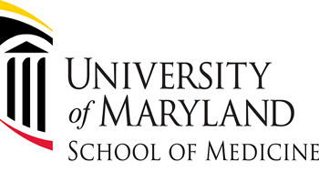

Sergey Brin
August 21, 1973
| Computer Scientist |
Internet Entrepreneur |
Too many rules stifle innovation.
Timeline
1973: Brin was born on August 21, 1973, in Moscow in the Soviet Union. He attended school at Paint Branch Montesorri School in Adelphi, Maryland, and Eleanor Roosevelt High School, Greenbelt, Maryland. He received further education at home. His father encouraged him to learn mathematics and his family helped him learn Russian.
1990-1993: September 1990, Brin enrolled in the University of Maryland. He received his Bachelor of Science from the Department of Computer Science in 1993 with honors in computer science and mathematics. Brin began his graduate study in computer science at Stanford University on a graduate fellowship from the National Science Foundation.
1996: Page and Brin used the former's basic HTML programming skills to set up a simple search page for users. They also began using computer parts they could find to assemble the necessary computing power to handle searches by multiple users. In August 1996, the initial version of Google, still on the Stanford University website, was made available to Internet users.
1998: Featured speaker at the World Economic Forum and the Technology, Entertainment and Design Conference. PC Magazine praised Google in the Top 100 Web Sites and Search Engines (1998) and awarded Google the Technical Excellence Award, for Innovation in Web Application Development in 1999.
2002-2003: In 2002, Brin, along with Larry Page, was named the MIT Technology Review TR100, as one of the top 100 innovators in the world under the age of 35. In 2003, both Brin and Page received an honorary MBA from IE Business School "for embodying the entrepreneurial spirit and lending momentum to the creation of new businesses".
2004-2005: In 2004, he and Page were named "Persons of the Week" by ABC World News Tonight. They received the Marconi Foundation Prize, the "Highest Award in Engineering".In January 2005, he was nominated to be one of the World Economic Forum's "Young Global Leaders".

2007-2008: In May 2007, Brin married biotech analyst and entrepreneur Anne Wojcicki at the Bahamas. In 2008, he made a donation to the University of Maryland School of Medicine, where his mother is being treated. In June 2008, Brin invested $4.5 million in Space Adventures, the Virginia-based space tourism company.

2016-2019: According to Forbes, he is the 12th richest person in the world with a personal wealth of US$39.2 billion as of October 2016. In 2019, Brin used the services of 23andMe. He discovered that both he and his mother possess a mutation of the LRRK2 gene (G2019S) that puts the likelihood of him developing Parkinson's in later years between 20% and 80%.